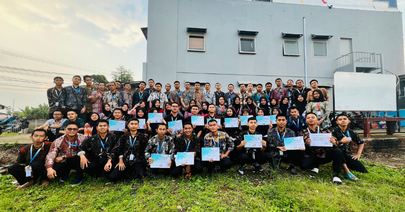

Gedung & Fasilitas Belajar
Lingkungan belajar yang asri, nyaman, dan representatif untuk mendukung proses penguasaan bahasa serta keterampilan siswa.

Pusat Pelatihan Representatif di Kabupaten Bandung Barat
Gedung LPK IJEF Corp dirancang khusus untuk menciptakan atmosfer belajar yang kondusif, tenang, dan mendukung interaksi aktif antara siswa dan sensei (pengajar). Terletak di kawasan Kabupaten Bandung Barat yang asri dengan pemandangan pegunungan dan udara sejuk, lingkungan kampus kami memberikan kenyamanan optimal selama masa pelatihan.
Mountain View & Udara Sejuk
Berlokasi di Kabupaten Bandung Barat dengan pemandangan pegunungan yang asri serta udara alami yang sejuk dan menyegarkan.
Area Wi-Fi Cepat
Akses internet stabil untuk mendukung riset materi dan modul pembelajaran online.
Pojok Baca & Referensi
Koleksi buku kamus, modul JLPT, dan panduan budaya Jepang lengkap.
Area Istirahat Nyaman
Fasilitas kantin dan ruang santai bersih untuk siswa beristirahat di sela jam pelajaran.
Ingin melihat langsung lokasi pelatihan kami atau berkonsultasi mengenai program?
Jadwalkan Kunjungan / Konsultasi